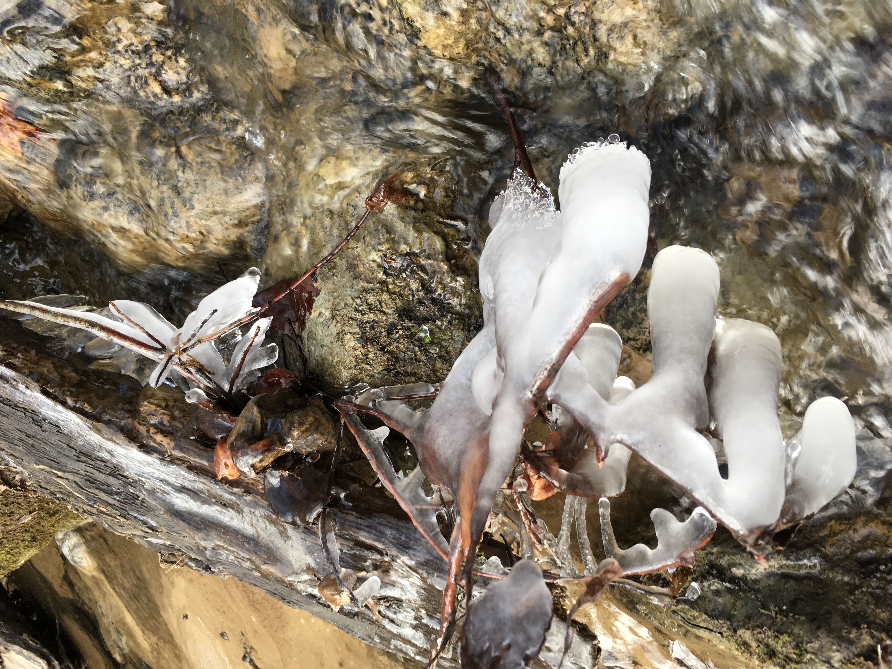

Going from Blockage to Flow
Aug 19, 2018 22:52 · 1284 words · 7 minutes read

My motivation for writing this post
The topics I’ve always been most enthusiastic about are human connections and everything connected to how we navigate through life. Recently, the conversations I’ve been having brought similar questions to the surface. Many are wondering:
- Why am I feeling tired and sluggish most of the days?
- How can I feel less stressed and more at ease?
- How can I resolve conflicts with people I am working with?
- Why do I not feel happy and fulfilled after my latest achievement?
I realized that I’m not asking myself those questions anymore as much as I used to. Many of my blockages have resolved. So what is it that has changed? I’m aware that my mindset has shifted and I approach life in a different way than before. My path has led me through many different environments and as I am aware that not everyone has the possibility to go into similar experiences, I want to share some key elements I have found across all kinds of different fields.
Spoiler: This post will not be a recipe for how to get into the flow.
You have to find out what works for you. Being in the flow is a practice, there’s no formula. I invite you to find the bits and pieces that work for you and ignore the rest. Don’t let the mind block you from getting something out of this for yourself. Be curious, be open for inspiration from new directions and start challenging your beliefs.
Key Elements of Being Human
Human Connection
We are social creatures. For a long time, I felt disconnected from everyone around me. Loneliness was very present in my life. It is clear to me now that I strive in human connection. I get excited, I get energized, I get inspired when I am being seen and heard and the other person feels the same.
Connection can happen through eye contact, physical touch or words and is essential to all of us. What comes up for you when you feel a connection to someone? When was the last time you felt deeply connected to another person? I believe it is important to understand that touch and closeness don’t have to be tied to sexuality. When I was younger, I barely experienced touch or closeness and felt the lack of it very strongly. Only within the last few years, I have learned that we can create spaces together, where touch is welcome in a consensual way that does not have any sexual implications. Whenever I leave those spaces, I feel safe and nourished.
The way we use words affects how close or distant we feel in relation to others. For a long time, I was unaware that my choice of words could feel hurtful or disrespectful. Getting inspired by people who expressed their feelings about something I said without attacking me, I started changing my way of communicating. I learned to let go of blame, shame and judgement towards myself and others. The key is being able to express what’s happening inside of me while being respectful and considerate of the feelings of others. I invite you not to suppress or ignore your emotions, they will bubble up sooner or later.
My personal inspiration
Betty Martin ✧ Nonviolent Communication ✧ Authentic Relating ✧ Circling ✧ Forum
Movement
I have been finding my own authentic way of moving and continue doing so day by day. It’s a long process of letting go, trusting and accepting myself. The body carries a high intelligence that I didn’t have access to until recently. I realized that fear of being judged had blocked me in the past. Learning that I was my toughest judge and transforming that voice from negative to positive beliefs was a liberating process that allowed me to connect more deeply to myself.
My personal inspiration
Tai Chi ✧ Qigong ✧ Yoga ✧ Ecstatic Dance ✧ Movement Medicine ✧ Movement Culture ✧ Joseph Bartz ✧ Contact Improvisation ✧ 5Rhythms ✧ African Dance ✧ Contemporary Dance ✧ Mariana Hilgert ✧ Juliana Kis ✧ Rafaelle de Oliveira
Awareness
Increasing my level of awareness is liberating me from stories and patterns that no longer serve me. I learned how to take a step back from my thoughts, which allowed me to see how my mind had influenced my life. There are many different meditation practices, keep looking until you find something that resonates with you. Another approach for becoming more aware and present is learning how to breathe. Start practicing different breathing techniques and observe how it affects you.
My personal inspiration
Meditation ✧ 22 Minutes of Bliss ✧ Dyads ✧ The Wim Hof Method
Sexuality
I want to live in a world where sexuality is a normal part of our life and stops being suppressed and associated with shame. For many years, I felt disconnected from my body and my own sexuality. Having been in an environment where people are consent aware and know how to communicate their wishes and boundaries has been one of the biggest gifts for me. It is so important to allow everyone to express their sexuality in their own unique way.
My personal inspiration
Sasha Cobra ✧ Ronja Sebastian ✧ Ruby May ✧ Felix Ruckert
Creative Expression
For many years, I had suppressed my creativity and partly still do. The world I knew was harsh and there was little room for acceptance and support. Ideas need space to evolve in. I want to create environments where we can work together on projects without having the fear of showing something that is not great. I am allowing myself more and more to fail or to do things that are not perfect. For me, it’s much more about embracing the process now than it is about the end result.
My personal inspiration
Percussions ✧ Marina Abramovic ✧ Mose ✧ Yatao ✧ Alice Phoebe Lou ✧ Mariana Hilgert ✧ Anir Leben ✧ Eva Delincakova ✧ Chloe ✧ Vondove ✧ Alphachanneling ✧ Katharina Jung ✧ Blauhauch
Shadows
Our shadows are the things we hesitate to share and as long as we keep them locked up, they come to the surface in unexpected and uncontrollable ways. Opening up and showing myself vulnerable, I’ve been noticing the shift in all kinds of my relationships. Once we understand that we’re all going through very similar struggles, we can support each other and learn how to deal with our pain and fears in a healthy way.
My personal inspiration
Nature
I make sure that I go for a walk and connect with nature on a regular basis. Disconnecting from technology, forgetting about time and things that I have to do brings relief and a sense of peace. Nutrition is another part that I keep learning about. I don’t believe in strict and challenging diets. For me, it’s more about trying out new things that inspire me and raising the awareness of what I put into my system and how it makes me feel.
My personal inspiration
Jonna Jinton ✧ Brendan Brazier